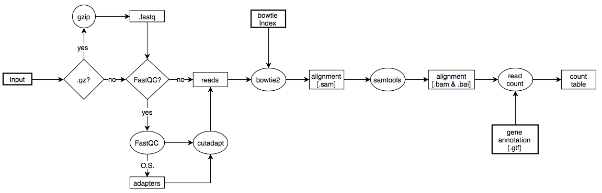

Tryprnaseq
Pipeline for RNAseq read counting of Trypanosoma reads
Project maintained by klprint Hosted on GitHub Pages — Theme by mattgraham

TrypRNAseq
The TrypRNAseq pipeline is designed to take raw Illumina reads, does quality control, removal of overrepresented sequences and alignes the processed reads to a genome. In the end it counts the reads to a user-supplied .gtf file and produces a tab-sepparated file summarizing its results. Users should only specify in the beginning parameters which are asked for in a command-line dialogue.
Information
- This code is still pre-alpha and is now under construction and cleanup!
- Till now, all reads will be aligned via bowtie2 up to 20-times (-k 20); in future releases this might be changed Please have a look at our Roadmap-page for upcomming features.
Dependencies
All dependencies need to be reachable via the command line.
- Python version 3
- FastQC v0.11.5
- Cutadapt version 1.7.1
- bowtie2 version 2.0.0-beta7
- samtools version 1.3.1
Workflow

Figure 1: Flow of the TrypRNAseq pipeline. Rhomboids represent user influenceable decissions, rectangles files and ellipses commands and tools. Data, which the user needs to supply are shown in bold rectangles. O.S. = Overrepresented sequences as found by FastQC (sequences which make up more than 1% of all reads
The Illumina sequencing results are fed into the pipeline either as .fastq or .gz file. If the reads are gzipped, they will be extracted and saved as fastq (fasta files are also possible, but not recommeneded, since no information about the quality is saved). The user specifies whether the input is given to FastQC for quality control and if the found overrepresented sequences (mostly Illumina adapters and rRNA reads) should be removed by cutadapt. The generated files are aligned to the user-provided genome as a bowtie2 index. Bowtie2 generates .sam files and for each sequencing file a .log file. The .log file can be reviewed – it contains informations about the time needed for alignment and the alignment itself (how many reads aligned / once / more than once?). The sam file is converted into binary .bam files by samtools and an index (.bai) for each .bam file is generated. Besides, the pipeline directly sorts the .bam files' content for user review using for example Artemis. In the end, a python script uses samtools and the user-provided gene annotation file (.gtf) to count the reads for each annotated gene (region, depending on the .gtf file).
Usage
In the following, the usage of TrypRNAseq is described. It is to be noted that till now, TrypRNAseq does not support paired end reads. This feature might be implemented in later versions.
- Download the latest version
- Add the files containing the reads (can be gzipped, NO tarballs, make sure all have the same extension)
- Start the pipeline using: >python3 tryprnaseq.py or >./tryprnaseq
- Follow the instructions prompted in the terminal
- If alignment against Trypanosoma brucei TREU927 genome is intended, the included bowtie2 index can be used
- If read counting should be done, using the coding sequences of the genes, the delivered GTF file (Tb_cds.gtf) can be used
- After the pipeline finished, the folder with tab separated read counts will open automatically
- Since some genes are annotated with multiple CDS, the pipeline will add up all reads of each individual CDS to the same geneID. geneID.a
The default settings are:
Default-parameters:
- Provided Bowtie Tryp. index
- Provided .gtf file for read count
- Remove all found adapters on both sides
- Keep a minimal length of 30bp/read, discard all shorter
- Number of threads = Will be asked for
New: Accessible on any folder
If a central installation of TrypRNAseq is preferred, add the location of tryprnaseq.py to the $PATH variable and allow tryprnaseq.py being executed (chmod 755 tryprnaseq.py). If this is done, one can invoke the pipeline by typing tryprnaseq.py in the terminal. The pipeline then uses the working directory of the terminal.
Parameters
Pipeline Parameters
Since 0.4 TrypRNAseq can be configured using commandline variables and flags. The following summarizes these options. Values in squared brackets are default settings if the option is ommited. If no option is specified, not even '-i', the terminal dialoque is started which guids the user through pipeline set-up.
| Option | Description |
|---|---|
| -h --help | Invokes the help message which summarizes all listed options |
| -i --extension | Following this option, the extension of the raw read-files can be specified. The pipeline will look in the present directory for all files with this extension and will treat these as the pipeline's input. Do not enter the '.' before the file extension: e.g.: fastq NOT .fastq [REQUIRED] |
| -u --ext-unzip | If '-i gz' is specified, the -u option needs to be added, giving the original file extension. This option was added since sometimes gzipped fastq files have the extension '.txt.gz' and therefore give no information what kind of file was gzipped. A TXT-file would hinder various downstream tools from functioning normally. |
| -x --bow-index | If the user wants to use his/her own bowtie-index for read-alignment, the -x option can be used. Specifiy here the directory of the index and the prefix of the index files. (e.g.: ./Index/TbGenome). [pipeline included bowtie index of Trypanosoma brucei Tb927] |
| -g --gtf | Specifies the GTF file which characterizes the gene boundaries for read counting. [pipeline included GTF file for Tb927 coding sequences] |
| -a --remove adapters | yes or no answer to whether identified overrepresented sequences should be removed prior to alignment. [yes] |
| -q --fastqc | yes or no answer to whether a quality analysis should be conducted on raw-reads using FastQC |
| -s --adapter-site | Specifies where the adapters (overrepresented sequences) are expected. Options are 3'(a), 5'(g) or both possible(b) [b] |
| -l --min-length | What is the minimal read length which should be kept after adapter removal? [30] |
| --max-adapters | How many of the (abundance sorted) overrepresented sequences (adapters) should be removed? Options are either a integer or 'all' which removes all identified overrepresented sequences. [all] |
| -t --threads | How many threads should be allocated to the pipeline? [4] |
Tool Parameters
The TrypRNAseq pipeline uses different tools to process high throughput sequencing results and counting of the reads for specified parts of the genome (i.e. genes pr CDSs). All tools come with a variety of specific options and default parameters. Careful consideration of the settings nee to be done, to prevent wrong data processing.
Table 1: Used tools and corresponding settings. user specified = These parameters are specified by the user in the starting dialogue.
| Tool | Settings for individual tool |
|---|---|
| cutadapt | -a/-g/-b (user specified), minimal kept length (user specified) |
| bowtie2 | -k 20 (align each read up to 20 times), -x (user specified genome index), -t (print wall-clock time), -S (input sam-files, pipeline generated), StdOut saved into .log files |
| samtools view | -b (generate .bam files), -S (read in .sam files) |
| samtools sort | -m 2G (Use up to 2GB of RAM), -@ thread_number (user specified) |
| samtools index | default paramters, indexes the generated .bam files |
| read counting script | reads in .gtf stored locations and uses samtools view to count the number of reads for each segment |
Pipeline output
The pipeline produces different folders, containing individual steps. All intermediate files are saved by default, so users can review each step after the pipeline finished. The following summarizes the folders and their content.
Table 2: Description of folders being created by TrypRNAseq pipeline.
| Folder | Content |
|---|---|
| gzipped_reads | If the reads file is gzipped in the beginning, the original .gz files will be copied here. |
| fqc_result | Output of the FastQC quality control. |
| adapters | .fasta files of the identified overrepresented sequences. These sequences are used by cutadapt for adapter removal. |
| rm_adapt | Output of cutadapt. For each sequencing file, one folder is created. Each contains 3 Files: X_trimmed.X / X_untrimmed.X / X_processed.X. The latter contains the summary of both previous files: Trimmed and untrimmed sequences and is used by bowtie2 for read alignment. |
| bowalign | Bowtie2 output folder, containing the alignment .sam files and a .log file for each input. The log saves bowtie2's statistics |
| bam_files | Samtools output, containing .bam and corresponding index files (.bai). |
| reads | Storage of the final read-counting. Each input file gets a separate tab-sepparated output file. Additionally, a summarized output matrix with all read-counts is generated. The header line includes the original file name. |
Attention
Be careful that you have enough storage capacity, since the pipeline stores intermediate files (that you can review the process afterwards). This means, you should provide at least 400GB of storage (high estimation, depending on your raw read-files' size).
Contact
If you have any questions don't hesitate to contact me. Either you open a issue, or write an email to subicere(at)protonmail.com.
Licence
This pipeline was created by Kevin Leiss of the Clayton lab (ZMBH, Centre for Molecular Biology Heidelberg, Germany). Individual parts are developed by Clementine Merce and Elisha Muchunga.

TrypRNAseq by Kevin Leiss is licensed under a Creative Commons Attribution-ShareAlike 4.0 International License.